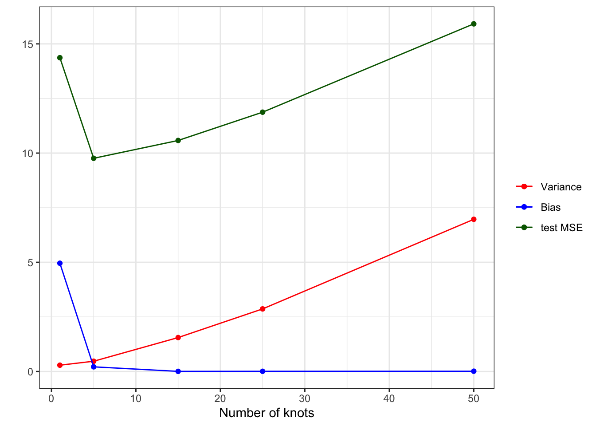

library(data.table)
library(tidyverse)
library(mgcv)
library(caret)
library(parallel)2 Bias-variance Trade-off
2.1 Training and Test MSE
Packages to load for replication
Suppose you have a dataset: \(D = \{X_1, y_1\}, \{X_2, y_2\}, \dots, \{X_N, y_N\}\), where \(X_i\) is a collection of features and \(y_i\) is the dependent variable for \(i\)th observation. Further, suppose you use \(D\) for training ML models and \(\hat{f}()\) is a trained model.
A most common measure of how good a model is mean squared error (MSE) defined as below:
\[ MSE = \frac{1}{N} \sum_{i=1}^N (y_i - \hat{f}(x_i))^2 \]
\(\hat{f}(x_i)\) is the value of \(y\) predicted by the trained model \(\hat{f}()\), so \(y_i - \hat{f}(x_i)\) is the residual (termed error more often).
When you get the MSE of a trained model for the very data that is used to train the model, then we may call it training MSE.
However, we are typically interested in how the trained model performs for the data that we have not seen. Let \(D^{test} = \{X^{test}_1, y^{test}_1\}, \{X^{test}_2, y^{test}_2\}, \dots, \{X^{test}_M, y^{test}_M\}\) denote new data set with \(M\) data points. Then the test MSE would be:
\[ MSE_{test} = \frac{1}{M} \sum_{i=1}^M (y^{test}_{i} - \hat{f}(x^{test}_{i}))^2 \]
Typically, we try different ML approaches (Random Forest, Support Vector Machine, Causal Forest, Boosted Regression Forest, Neural Network, etc). We also try different values of hyper-parameters for the same approach (e.g., tree depth and minimum observations per leaf for RF). Ideally, we would like to pick the model that has the smallest test \(MSE\) among all the models.
Suppose you do not have a sufficiently large dataset to split to train and test datasets (often the case). So, you used all the available observations to train a model. That means you can get only training \(MSE\).
The quick answer is no. The problem is that the model with the lowest training \(MSE\) does not necessarily achieve the lowest test \(MSE\).
Let’s run some simulations to see this. The data generating process is as follows:
\[ y = (x - 2.5)^3 + \mu \]
where \(\mu\) is the error term.
set.seed(943843)
# define the data generating process
# x fixed
gen_data <- function(x) {
ey <- (x - 2.5)^3 # E[y|x]
y <- ey + 3 * rnorm(length(x)) # y = E[y|x] + u
return_data <- data.table(y = y, x = x, ey = ey)
return(return_data)
}
## generate train data
train_data <- gen_data(x = runif(100) * 5)
## generate test data
# test data is large to stabilize test MSE
test_data <- gen_data(x = runif(10000) * 5)Visually, here is the relationship between \(E[y]\) and \(x\):
Code
ggplot(data = train_data) +
geom_line(aes(y = ey, x = x)) +
theme_bw()
Now, let’s define a function that runs regression with different levels of flexibility using a generalized additive model from the mgcv package, predict \(y\) for both the train and test datasets, and find train and test MSEs. Specifically, we vary the value of k (the number of knots) in gam() while intentionally setting sp to \(0\) so that the wiggliness of the fitted curve is not punished.
A very brief introduction of generalized additive mode is available in Chapter 1
est_gam <- function(k, train_data, test_data)
{
# define train and test data
train_data <- copy(train_data)
test_data <- copy(test_data)
#--- train a model ---#
trained_model <- gam(y ~ s(x, k = k), sp = 0, data = train_data)
#--- predict y for the train and test datasets ---#
train_data[, y_hat := predict(trained_model, newdata = train_data)]
train_data[, type := "Train"]
test_data[, y_hat := predict(trained_model, newdata = test_data)]
test_data[, type := "Test"]
#--- combine before returning ---#
return_data <-
rbind(train_data, test_data) %>%
.[, num_knots := k]
return(return_data)
}We now loop over the number of knots (num_knots).
sim_results <-
lapply(1:50, function(x) est_gam(x, train_data, test_data)) %>%
rbindlist()Figure 2.1 presents the fitted regression lines for num_knots \(= 1, 4, 5, 15, 25\), and \(50\), along with the observed data points in the train dataset.
Code
ggplot(sim_results[num_knots %in% c(1, 4, 15, 25, 50), ]) +
geom_point(data = train_data, aes(y = y, x = x), color = "grey") +
geom_line(aes(y = y_hat, x = x, color = factor(num_knots))) +
theme_bw()When the number of knots is \(1\), gam is not flexible enough to capture the underlying cubic function. However, once the number of knots becomes \(4\), it is capable of capturing the underlying non-linearity. However, when you increase the number of knots to 15, you see that the fitted curve is very wiggly (sudden and large changes in \(y\) when \(x\) is changed slighly). When num_knots \(= 50\), the fitted curve looks crazy and does not resemble the underlying smooth cubic curve.
Now, let’s check how train and test MSEs change as k changes. As you can see in Figure 2.2 below, train MSE goes down as k increases (the more complex the model is, the better fit you will get for the train data). However, test MSE is the lowest when num_knots \(= 4\), and it goes up afterward instead of going down. As we saw earlier, when model is made too flexible, it is trained to fit the trained data too well and lose generalizability (predict well for the dataset that has not been seen). This phenomenon is called over-fitting.
Code
#--- get train and test MSEs by k ---#
summary <-
sim_results[, .(mse = mean((y_hat - y)^2)), by = .(num_knots, type)]
ggplot(summary) +
geom_line(aes(y = mse, x = num_knots, color = type)) +
geom_point(aes(y = mse, x = num_knots, color = type)) +
xlab("Number of knots") +
ylab("MSE") +
scale_color_discrete(name = "") +
theme_bw()
If we were to trust train MSE in picking the model, we would pick the model with k \(= 50\) in this particular instance. This clearly tells us that we should NOT use training MSE to pick the best model.
2.2 Bias-variance trade-off
Expected test MSE at \(x = x_0\) can be written in general (no matter what the trained model is) as follows:
\[ E[(y_0 - \hat{f}(x_0))^2] = Var(\hat{f}(x_0)) + Bias(\hat{x}_0)^2 + Var(\mu) \]
- \(Bias(\hat{x}_0) = E[\hat{f}(x_0)]-y_0\)
- \(Var(\hat{f}(x_0)) = E[(E[\hat{f}(x_0)]-\hat{f}(x_0))^2]\)
The first term is the variance of predicted value at \(x_0\), the second term is the squared bias of \(\hat{f}(x_0)\) (how much \(\hat{f}(x_0)\) differs from \(E[y_0]\) on average), and \(Var(\mu)\) is the variance of the error term.
To illustrate this trade-off, we will run Monte Carlo simulations. We repeat the following steps 500 times.
- step 1: generate train and test datasets
- step 2: train gam with different values of \(k\) \((1, 5, 15, 25, 50)\) using the train dataset
- step 3: predict \(y\) using the test dataset
Once all the iterations are completed, simulation results are summarized to estimate \(Var(\hat{f}(x_0))\) and \(E[y - \hat{f}(x_0)]^2\) for all the values of \(x_0\) (all the \(x\) values observed in the test dataset) by \(k\). We then average them to find the overall \(Var(\hat{f}(x_0))\) and \(E[y - \hat{f}(x_0)]^2\) by \(k\).
x_train <- runif(100) * 5
# x_test is fixed to make it easier to get average conditonal on a given value of x later
x_test <- runif(100) * 5
# function that performs steps 1 ~ 3 (a single iteration)
run_mc <- function(i, x_train, x_test)
{
print(i) # track progress
train_data <- gen_data(x_train) # generate data
test_data <- gen_data(x_test) # generate data
# run gam for K = 1, ..., 50
sim_results <-
lapply(
c(1, 5, 15, 25, 50),
function(x) est_gam(x, train_data, test_data)
) %>%
rbindlist()
return(sim_results)
}
# runs run_mc 500 times
mc_results <-
mclapply(
1:500,
function(x) run_mc(x, x_train, x_test),
mc.cores = 12
) %>%
rbindlist(idcol = "sim_id") Figure 2.3 shows plots fitted curves for all the 500 simulations by \(k\) (grey lines). The blue line is the true \(E[y|x]\). The red line is \(E[\hat{f}(x)]\)1. Figure Figure 2.4 plots the average2 \(Var(\hat{f}(x))\) (red), \(E[y - \hat{f}(x)]^2\) (blue), and test MSE (darkgreen) from the test datasets for different values of \(k\).
Code
mc_results_sum <-
mc_results %>%
.[type == "Test", ] %>%
.[, .(mean_y_hat = mean(y_hat)), by = .(x, ey, num_knots)]
ggplot() +
geom_line(data = mc_results[type == "Test", ], aes(y = y_hat, x = x, group = sim_id), color = "gray") +
geom_line(data = mc_results_sum, aes(y = mean_y_hat, x = x), color = "red") +
geom_line(data = mc_results_sum, aes(y = ey, x= x), color = "blue") +
facet_wrap(. ~ num_knots, ncol = 5) +
theme_bw()
As you can see in Figure 2.3, when \(k = 1\), it clearly has a significant bias in estimating \(E[y|x]\) except for several values of \(x\) at which \(E[\hat{f}(x)]\) only happens to be unbiased. The model is simply too restrictive and suffers significant bias. However, the variance of \(\hat{f}(x)\) is the smallest as shown in Figure 2.4. As we increase the value of \(k\) (making the model more flexible), bias dramatically reduces. However, the variance of \(\hat{f}(x)\) slightly increases. Going from \(k = 5\) to \(k = 15\) further reduces bias. That is, even though individual fitted curves may look very bad, on average they perform well (as you know that what bias measures). However, the variance of \(\hat{f}(x)\) dramatically increases (this is why individual fitted curves look terrible). Moving to a even higher value of \(k\) does not reduce bias, but increases the variance of \(\hat{f}(x)\) even further. That is, increasing \(k\) from 15 to a higher value of \(k\) increases the variance of \(\hat{f}(x)\) while not reducing bias at all.
According to MSE presented in Figure 2.4, \(k = 5\) is the best model among all the models tried in this experiment. In this experiment, we had test datasets available. However, in practice, we need to pick the best model when test datasets are not available most of the time. For such a case, we would like a clever way to estimate test MSE even when test datasets are not available. We will later talk about cross-validation as a means to do so.
Code
sum_stat <-
mc_results %>%
.[type == "Test", ] %>%
.[
,
.(
var_hat = var(y_hat), # varianc of y_hat
bias_sq = mean(y_hat - ey)^2, # squared bias
mse = mean((y - y_hat)^2)
),
by = .(x, num_knots)
] %>%
.[
,
.(
mean_var_hat = mean(var_hat),
mean_bias_sq = mean(bias_sq),
mean_mse = mean(mse)
),
by = .(num_knots)
]
ggplot(data = sum_stat) +
geom_line(aes(y = mean_var_hat, x = num_knots, color = "Variance")) +
geom_point(aes(y = mean_var_hat, x = num_knots, color = "Variance")) +
geom_line(aes(y = mean_bias_sq, x = num_knots, color = "Bias")) +
geom_point(aes(y = mean_bias_sq, x = num_knots, color = "Bias")) +
geom_line(aes(y = mean_mse, x = num_knots, color = "test MSE")) +
geom_point(aes(y = mean_mse, x = num_knots, color = "test MSE")) +
scale_color_manual(
values = c("Variance" = "red", "Bias" = "blue", "test MSE" = "darkgreen"),
name = ""
) +
ylab("") +
xlab("Number of knots") +
theme_bw()
2.3 Additional Example (K-nearest neighbor regression)
Another example of bias-variance trade-off is presented using KNN as the regression method. Its hyper-parameter - the number of neighbors (k) - is varied to see its effect.
fit_knn <- function(k, train_data, test_data)
{
# define train and test data
train_data <- copy(train_data)
test_data <- copy(test_data)
#--- train a model ---#
trained_model <- knnreg(y ~ x, k = k, data = train_data)
#--- predict y for the train and test datasets ---#
train_data[, y_hat := predict(trained_model, newdata = train_data)]
train_data[, type := "Train"]
test_data[, y_hat := predict(trained_model, newdata = test_data)]
test_data[, type := "Test"]
#--- combine before returning ---#
return_data <-
rbind(train_data, test_data) %>%
.[, num_nbs := k]
return(return_data)
}We now loop over the number of neighbors (k).
## generate train data
train_data <- gen_data(x = runif(1000) * 5)
## generate test data
test_data <- gen_data(x = runif(1000) * 5)
sim_results <-
lapply(1:50, function(x) fit_knn(x, train_data, test_data)) %>%
rbindlist()Figure 2.5 presents the fitted regression lines for \(k = 1, 5, 15, 25\), and \(50\) using knnreg(), along with the observed data points in the train dataset.
Code
ggplot(sim_results[num_nbs %in% c(1, 5, 15, 25, 50), ]) +
geom_point(data = train_data, aes(y = y, x = x), color = "gray") +
geom_line(aes(y = y_hat, x = x), color = "red") +
facet_grid(num_nbs ~ .) +
theme_bw()Code
#--- get train and test MSEs by k ---#
summary <-
sim_results[, .(mse = mean((y_hat - y)^2)), by = .(num_nbs, type)]
ggplot(summary) +
geom_line(aes(y = mse, x = num_nbs, color = type)) +
geom_point(aes(y = mse, x = num_nbs, color = type)) +
xlab("Number of neighbors") +
ylab("MSE") +
scale_color_discrete(name = "") +
theme_bw()References
This figure is a collection of individual fitted curve just like the ones shown in Figure 2.1.↩︎
averaged over \(x\), and then averaged over iterations↩︎